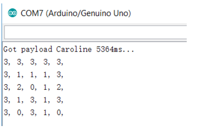
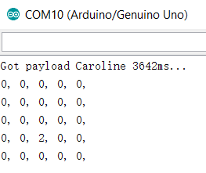

2 radio breakout boards with headers
VGA cable, screen, connector
2 Arduinos and 1 DE0-nano
We followed the well documented lab 4 instructions to set up the hardware and software of the RF24. To configure our pipe address, we use the formula 2(3D + N) + X and since we are Thursday and Team 12, we are using 2*(3*3 + 12) + X = 42 and 43 or 2A and 2B in hex.
const uint64_t pipes[2] = { 0x000000002ALL, 0x000000002BLL };
The sample code has already set up to constantly transmitting or receiving the milliseconds since boot time of the arduino, so we just flashed it with the new pipe addresses and it worked like charms. The arduino configured to receive was printing the milliseconds since boot time correctly. We compared the packages sent and the packages received. There weren’t any dropped packets and interference we know of. At RF24_PA_MIN power mode, we can receive data in a range of about 10 feet. At RF24_PA_MAX power mode, we can receive data in a range of about 30 feet, from the end of the lab all the way to the elevator outside of the lab :D.
Next, we have to configure our code to send a 5 by 5 maze that is in unsigned char data type. Each char data takes one byte so we are sending a total of 25 bytes of data. Since the maximum payload size we can send via the nRF24L01+ transceiver is 32 bytes of data, it is well doable to simply send the 25 bytes of data without any sorts of data compression, which is what we did. We created an unsigned char 5 by 5 array called maze and configured the RF24 arduino library’s write function to send 25 bytes. From the documentation, we learned that the write function takes in two parameters: 1. A pointer to the data buffer to be sent and 2. The number of bytes to be send.
bool RF24::write (const void * buf, uint8_t len)
So we pass the address of the maze and the number of bytes we are sending to the write function.
bool ok = radio.write( &maze, 25 * sizeof(unsigned char));
This is modified similarly in the receiving end of the Arduino. We created a 5 by 5 array called caroline (we love our team members, we swear!) and pass the address of caroline and the number of bytes we are expecting to the read function to receive the maze.
unsigned char caroline[5][5];
done = radio.read( &caroline, 25 * sizeof(unsigned char));
printf("Got payload Caroline %dms...",got_time);
Serial.println("");
for (int i = 0; i < 5; i++){
for (int j = 0; j < 5; j++){
Serial.print(caroline[i][j]);
Serial.print(", ");
}
Serial.println("");
}

A more efficient way to send data is to only send updated robot information instead of the entire maze. So we modified our code to only send 3 bytes of data in a variable called packMaze, where position 0 of packMaze is the X-position of the maze, position 1 is the Y-position of the maze and position 2 is the data in that X,Y position, and modified radio write function to only send 3 bytes of data instead of 25 bytes. In the receiving end of the code. We initialized the 5x5 maze to 0 and declared a 3 bytes receiving buffer and configured the radio read function to receive 3 bytes of data. Once we receive the buffer data, we use data in positions 0 and 1 of the buffer as index to the maze and store data in position 2 of the buffer to the corresponding location in the maze. Working great :D
//Radio Sending Code--------------------------
unsigned char packMaze[3];
packMaze[0] = 3; //X-position stored in position 0
packMaze[1] = 2; //Y-position stored in position 1
packMaze[2] = 2; //Data stored in position 2
bool ok = radio.write( &packMaze, 3 * sizeof(unsigned char)); //Sending 3 bytes of data
//Radio Receiving Code------------------------
unsigned char caroline[3]; //Cheers to caroline, the best receiving buffer
unsigned char maze[5][5] ={0}; //Initialize the 5x5 maze to 0
done = radio.read( &caroline, 3 * sizeof(unsigned char)); //Receiving 3 bytes of data
printf("Got payload Caroline %dms...",got_time);
maze[caroline[0]][caroline[1]] = caroline[2]; //Store data into maze position
//Print the maze
Serial.println("");
for (int i = 0; i < 5; i++){
for (int j = 0; j < 5; j++){
Serial.print(maze[i][j]);
Serial.print(", ");
}
Serial.println("");
}

In the final maze, we will be using the more efficient way to send data, which only sends new information when the robot is at intersection. For simplification, in this lab, we are only sending one byte of data, where the bits 0-4 are used for position (since there are 4x5 = 20 positions, 2^5 > 20), bits 5-6 are used as orientation(00 means the robot is facing south, 01 means facing right, 10 means north, 11 means left) and bit 7 is used as the checked bit (It is 1 when bit 0-6 has an odd number of 1 and it is 0 when bit 0-6 has an even number of 1.) For example, sending 10100000 would mean the robot is currently at grid 0 facing right.
From lab 3, we were able to draw four grid squares to the screen. Extending this to draw the entire 4-by-5 grid only required adding more conditions to our drawing machine. We added more conditionals on our FPGA that tested the x and y coordinates of each pixel to see if it lies in any of our grid squares. If it lies within one of the grid squares we may set it to be the desired color for that square. This required 20 conditional statements: one for each block. Though the verilog code is long and unpleasant, we reasoned that this is unimportant as the hardware implementation will be the same whether or not we condense the code.
Although the GPIO layout of the FPGA seems suited for parallel communication (with many pins all accessible through one register), we decided to implement serial communication between the Arduino and FPGA because it requires less wiring, has libraries on Arduino, and provides for a better learning experience.
Using the existing Arduino SPI library, we wrote a simple Arduino program that sends a sequence of unit increasing eight bit numbers on a loop every second. Only three pins were required on the Arduino: SPI Clock, Slave Select, and MOSI (no MISO was required because we are only sending data from Arduino to FPGA).
The more difficult side of establishing the serial connection was programming the FPGA to read in data. To do this, we needed to make a sequential logic block that runs on the FPGA system clock. The sequential logic samples the SPI Clock input (which works because the FPGA clock is faster) as well as the SS and the MOSI to detect rising and falling edges. To detect edges, we had to store both the previous and current values of our signals so that we could compare them and detect changes.
The module for receiving data works as follows. The FPGA waits for SS to have a rising edge (we chose to have an active high SS) whereupon we start listening for clock edges because the transmission has begun. When we detect a rising edge of the clock, we store the value of the MOSI at that time in an 8-bit register at an index kept by another register that is initialized to 7 at the beginning of a transmission and decremented at every clock edge. By the time SS goes low again, we have populated the 8-bit register with the data sent over the MOSI line and successfully completed a transmission.
To test that we implemented SPI correctly, we mapped the received values to the LED. The result was as predicted, the LED’s counted up in binary at a rate of one number per second.
After we read in the position of the robot from the Arduino, the byte of data is saved into an array that contains 20 8-bit registers. Each 8-bit register represents one node or grid square on the maze. From this 8-bit information, we are able to programmatically determine the color each grid should be. The robot's position was arbitrarily determined to be red for this exercise. When the chip select signal has a falling edge, our Arduino has finished receiving all the bits and saves the 8 bits, then turns the corresponding grid data into the encoding for red.
Now that we have the grid turning red for each new node the robot has explored, to implement visited locations, we need an extra register that saves the coordinate of the last register. Now, every time the robot receives a new location, it will update the color of that new location to red, while also updating the previous location's color to green. Then it will update the value in this register to the new location.
1. Make sure to voltage divide the 5V GPIOs of the arduino to 3V before connecting to the 3.3V GPIOs FPGA (We connected the 5V GPIOs dirctly at one point. We got some weird signals from time to time but it didn't blow the FPGA pins :D
2. Make sure to initialize reg variables in the verilog code using "intial begin" "end" or compliers would assign something weird to it